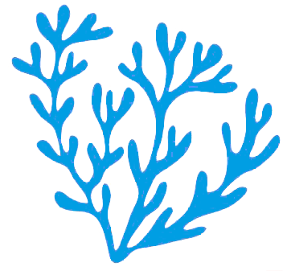
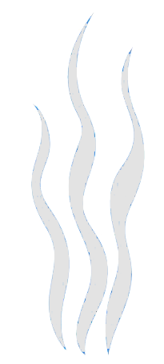

Signature
Crudi, emulsioni, vegetali marini
Tagli puliti, acidità misurate e una palette che lascia parlare il pesce.

Quiet luxury mediterranea
Coralì lavora su materia prima, stagionalità e servizio discreto. Ogni piatto nasce da ingredienti riconoscibili e viene composto con precisione, senza eccessi scenografici.
La sala accompagna lo stesso linguaggio: pietra, luce soffusa, dettagli argento e accenti azzurri che richiamano il mare senza diventare decorazione.
2025
Travellers' Choice
Varazze
Cucina di costa


Fluid gallery
Signature
Tagli puliti, acidità misurate e una palette che lascia parlare il pesce.

Ogni giorno
Pesce, sala, luce: pochi elementi, scelti bene.

Location e prenotazioni
Orari
Martedì - Sabato19:00 - 23:00
Domenica12:30 - 15:30
LunedìChiuso
Indirizzo
Corso Cristoforo Colombo, 86
17019 Varazze SV
Telefono
019 770 3829